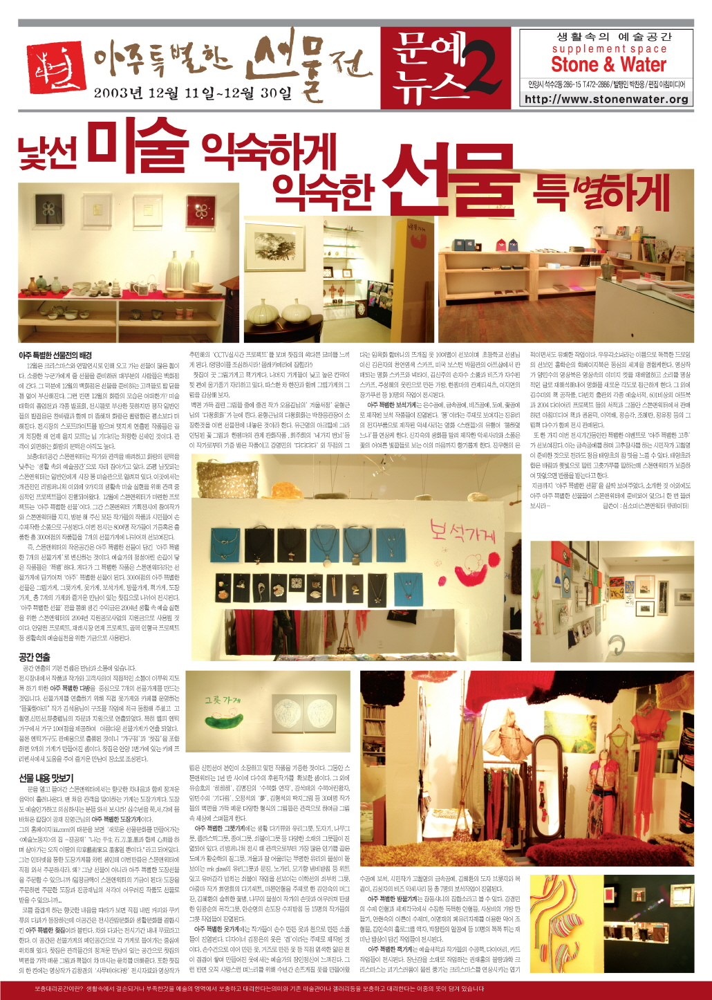
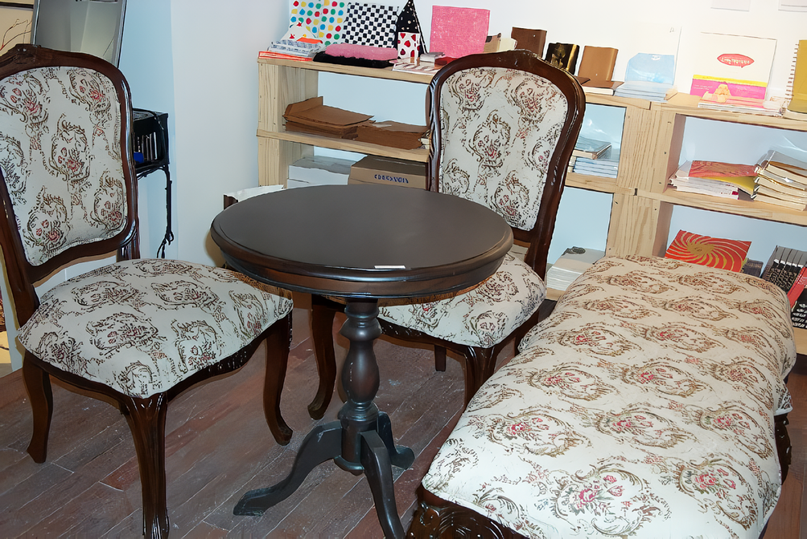
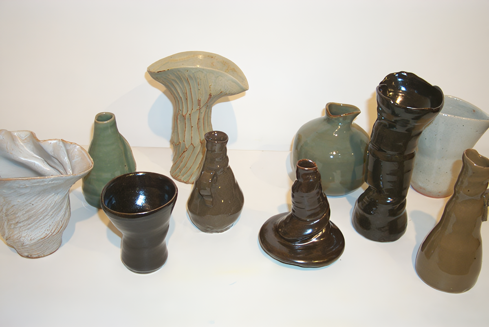
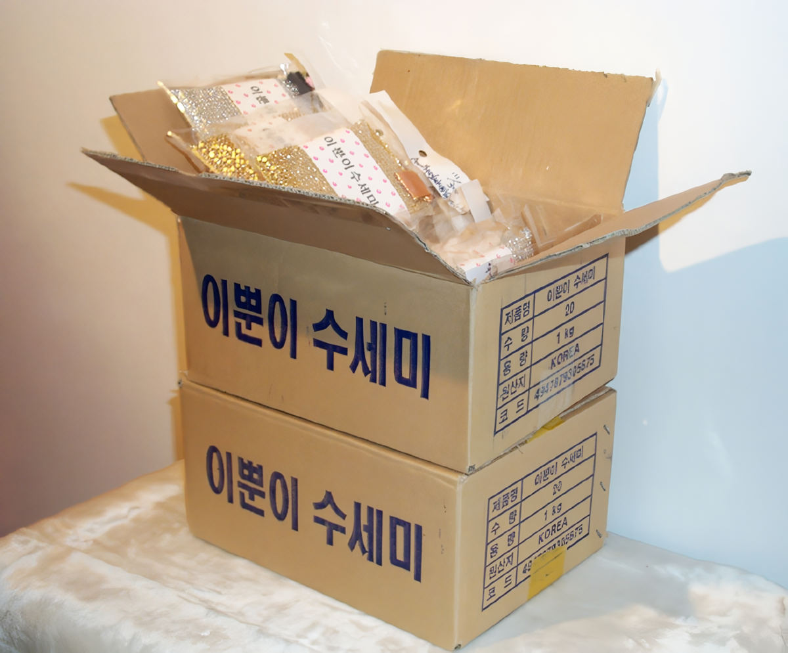
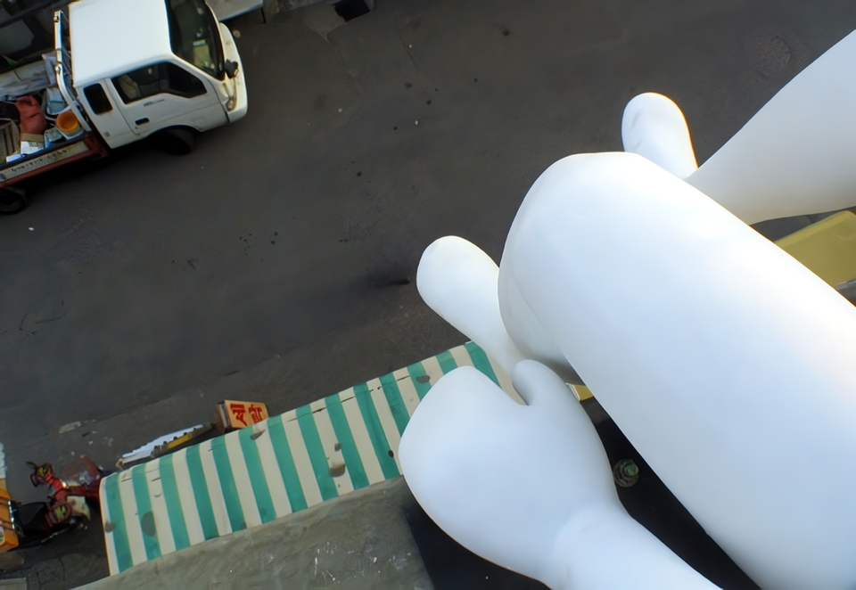
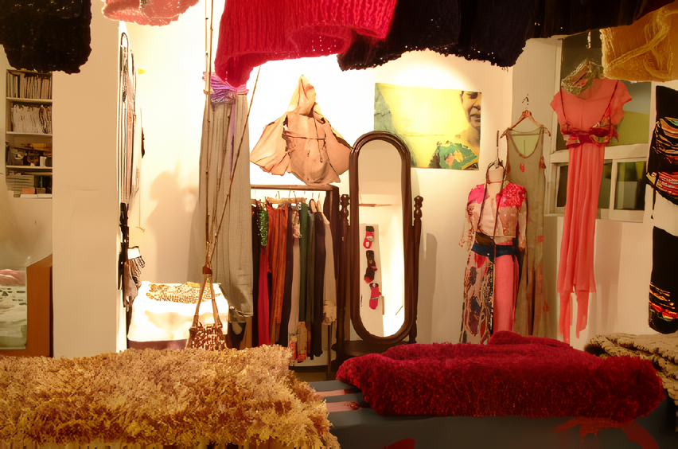
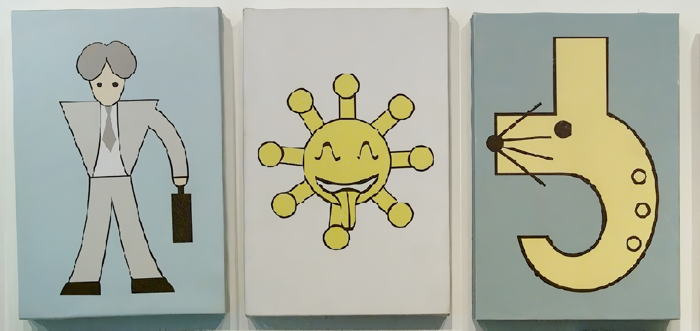
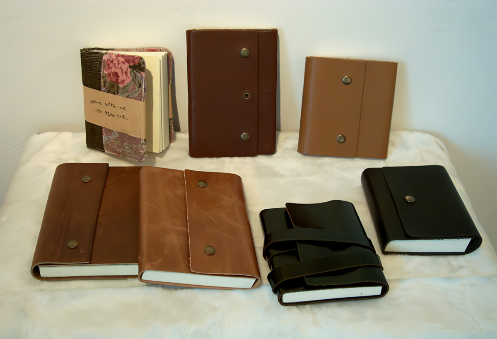
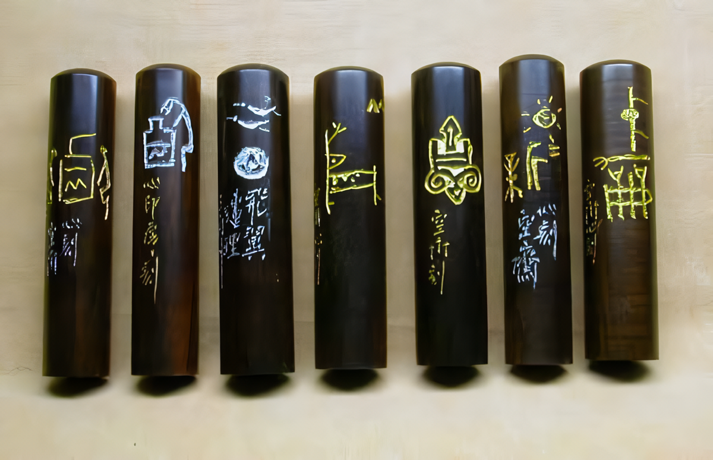
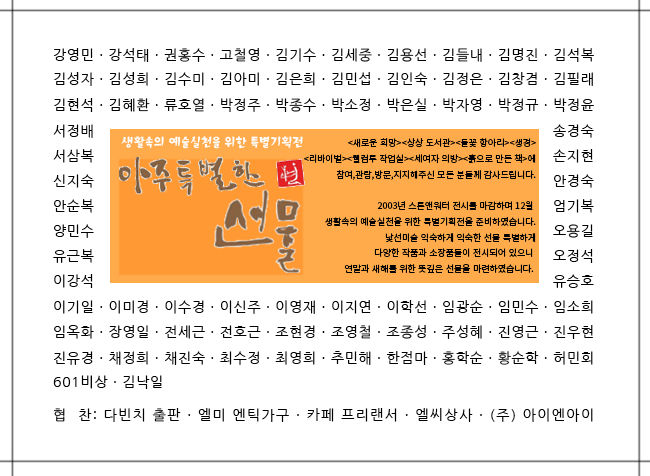

아주 특별한 선물展
2003_1210 ▶ 2003_1230
그간 스톤앤워터 전시에 참여해 주시고 관람해주신 모든 분들께 감사드립니다.
2003년 전시행사를 마감하며 12월에 아주 특별한 행사를 마련했습니다.
행사의 내용은 다음과 같습니다.

■ 2003 아주 특별한 선물전의 취지와 의도
아주 특별한 선물展은 그간 스톤앤워터 전시활동을 총망라하여 참여작가(참여관객)들이 직접 만들거나 소장하고 있는 작품(소품)을 출품 혹은 기증하여 만들어지는 특별한 만남의 장이다.
아주 특별한 선물展은 그동안 스톤앤워터의 전시와 함께 해온 작가(관객)들에게 편지나 이메일을 통해 아주 특별한 선물전선물展에 출품의사 혹은 기증의사를 묻고 승난하신 분들의 작품을 7개의 특별한 방에 전시합니다.
아주 특별한 선물展은 중저가 예술시장을 본격적으로 펼쳐보이는 장이 될것이며, 스톤앤워터의 모토 '생활 속의 예술'과 '보충과 대리'를 지지하는 모든 이들의 파티(잔치)가 될 것입니다.
아주 특별한 선물展을 통해 마련되는 수익금은 2002년 6월 15일 이식되고 배양되어진 스톤앤워터라는 이름의 바이러스에 영양분을 공급하는데 쓰입니다.
       
■ 전시 연출 방법
1. 아주 특별한 다방 - 스톤앤워터 공간에 메인공간으로 차와 음료 와인등이 제공됩니다. 만남의 즐거움이 있는 공간
2. 아주 특별한 그릇가게 - 흙, 나무, 유리, 플라스틱, 쇠등 다양한 재료로 만든 사람의 숨결이 느껴지는 아주 특별한 그릇들이 전시됩니다.
3. 아주 특별한 보석가게 - 목걸이, 귀걸이, 반지, 삔, 브롯지 등 참여작가의 손으로 직접 만든 악세사리로 이뤄진 가게입니다.
4. 아주 특별한 방물가게 - 독특하고 아기자기한 각종 소품들이 보따리채 가득 쌓여있는 아주 특별한 방물이랍니다.
5. 아주 특별한 인형가게 - 아기 자기한 인형부터 거대한 인형까지 다양하게 전시됩니다.
6. 아주 특별한 옷가게 - 참여작가들이 직접 만든 옷과 가방, 목도리, 스카프 등 의류 잡화들로 구성됩니다.
7. 아주 특별한 그림가게 - 재료나 화풍을 구분하지 않고 아마와 프로를 구분하지 않는 다양한 성격의 작은 그림들을 선보입니다.
8. 아주 특별한 책가게 - 각종 예술서적, 수공으로 만든 책, 어린이 그림책이 있는 예술서점입니다.
9. 아주 특별한 도장가게 - 오랫동안 전각쟁이, 칼잡이로 불리우던 '진공재'님의 아주 특별한 예술도장가게 입니다.

■ 전시문의
보충대리공간 스톤앤워터 안양시 만안구 석수2동 286-15 2층
이메일 stonenwater@hanmail.net / 전화 031)472-2886 / 팩스 031)472-2886
홈페이지 http://www.stonenwater.org / 큐레이터 심소미 핸드폰 011-9700-8130
| ||||||||||||||||||||||||||
|
|
 about us
about us